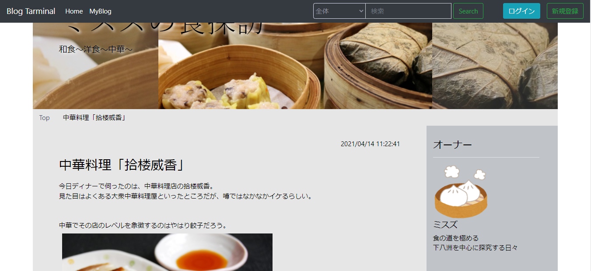

自己紹介
ゲーム制作の専門学校を卒業し、9年半のブランクを経てふとしたきっかけでプログラミングに特化した就労移行支援へ通うことに。webアプリ制作をはじめ、様々な事に挑戦しています。
企業実習で実際の開発フローを経験、webアプリ開発プロジェクトのリーダーを勤めるなど実践的な経験を積み邁進しています。
通い始めてから約1年半の間、週5で通勤して活動しているので就労準備は万全です。
PHP(Laravel)、JavaScriptでのWebアプリケーション制作に自信があります。APIの作成、ajaxでの通信及び画面更新を経験しています。Java(JavaFX)やC#でのwindowsアプリケーションの制作の経験もあります。
目標は上流工程から携わるSEですが、現在実務経験がないので、Web系、又はオープン系の開発に携わりスキルを上げていきたいです。
障害について
障害は主に「全般性不安障害」で、障害者手帳 精神3級を取得しています。物事に取り掛かる際いろいろと心配して躊躇してしまいがちですが、就労移行支援に踏み出してからは様々な新しいことにチャレンジしています。
2019年12月頃に友人から気管切開をした人の話を聞いたことをきっかけに、強い息苦しさ、詰まり感を継続的に感じるようになりました。心療内科にかかったところ全般性不安障害の診断が下りました。
通院・服薬して、症状が落ち着いた頃に医師の勧めにより就労移行支援にて就職を目指し始めました。
医師指導のもと2021年10月より減薬を始め、2022年4月に服薬を終了しました。
現在は月に1度の定期的な通院のみで、服薬はしておりません。
新しい一歩を踏み出すのに躊躇してしまうことはありますが、パフォーマンスにおいて他に劣ることはないと自負しています。
略歴
2006年 4月
2009年 3月
大阪府立大阪工業高等学校 電子機械科
2009年 4月
2011年 3月
大阪ゲーム制作専門学校 ゲーム制作コース(プログラマー)
2020年10月
現 在
就労移行支援アップル梅田
[専門学校]
「VB、C++」を学習。
学習過程で2Dゲームを3本完成。
グループ制作で2Dゲームを1本完成。
個人製作で3D&2Dゲームを1本完成。
[就労移行支援]
「Java、C#、HTML、CSS、PHP(Laravel)、JavaScript、SQL、Python」を学習。
PHP等でブログ作成サイトを作成。
JavaFXで上記ブログ作成サイトのアクセス解析ツールを作成。
Laravel、JavaScript等を用い、実習先で実際の案件を3ヶ月でアクション定義からテスト(完成)まで担当。
C#、.netでWindowsのマイクのミュート状態を切り替えるアプリを作成。
Laravel、JavaScript等を用いたwebアプリのチーム開発(4名)でリーダーを務める。
Java(LibGDX)を用いたチーム開発(3名)ですごろくゲームを作成。
PythonのScrapyを用いてWebスクレイピング(ハローワーク求人の条件を指定して絞り込み。csv、HTMLでの出力)
現在は就職活動をしつつFlutterの学習をしています。
これらのスキルは就労移行支援アップル梅田での訓練で習得しました。Progate及び独自サービスでの基礎学習まではサポートしていただき、それ以降は全て自己学習のうえ制作してきました 。そのため、課題解決に向けての自走力には自信があります。
[職務経験]
なし
作成物
専門学校
たまばこ
個人制作の2.5Dパズル弾幕アクション
就労移行支援
ブログ作成サイト
製作期間4ヶ月程度
PHP等を使用して、アカウントを作成して、ブログ作成・管理のできるサイトを制作しました。
ブログ単体ではなく、ブログが作成できるサイトを作成することで、より実践に近い体験をすることができました。
PHP等を学びつつ作った習作です。レンタルサーバーに上げた際に検索とカレンダーがバグっていることに気づきますが、振り返って修正に手間をかけるより新しいことに着手したほうが良いと判断したのでそのままになっています。
自作ブログ作成サイトのアクセス解析アプリ
企業実習 受注・生産管理Webアプリケーション
3ヶ月強の企業実習で作成しました。
PHP/Laravelを使用し、機械部品製造業向けの受注・生産管理Webアプリケーションを制作。
就労移行支援アップル梅田から私含め2名での実習で、実際の他社からの案件をやらせてもらえました。
これまでLaravelの概要は把握していましたが触ったことが無い状態からのスタートでした。
APIの作成やajaxでの通信及び更新を学習しながら実装しました。
アクション定義から最終テストまで行いました。
Windowsのマイクミュート切り替えソフト
製作期間3ヶ月程度
c#、.net Frameworkを使用して、Windoes用のホットキーでのマイクミュート切り替えソフトを制作しました。
似たようなフリーソフトを使っていたのですが、使い勝手が悪かったので作りました。
特徴は、システムのレベルでミュートしているので各通話ソフトの設定に依存せず横断的に使える。タスクトレイ又はオーバーレイ表示でミュート状態を確認できる。3つの動作モード(トグル・Push to Talk・Push to Mute)。ゲーミングモード(登録していない修飾キーが押されていても動作するモード。スプリントやしゃがみをしながらでも反応してほしい時に使用)。
UXを重視して細かな調整をしています。自分でも日常的に使用しています。
現状マーケティングができていないのが課題です。
就労移行支援事業所独自のチャットおよび予定通知ツール(共同開発[リーダー])
製作期間3ヶ月程度
5名によるグループで、就労移行支援事業所で使用するチャットおよび予定通知ツールを制作しました。(PHP/Laravel, JavaScript)
プログラムの知識のない職員がクライアントになり、要件定義から納期の見積もりなど実務を想定したフローで行いました。
リーダーを務め、日程管理や工程の割り振り、仕様の統一・決定などをこなしつつ、遊撃隊として手の足りない部分を担当しました。
担当箇所は予定通知、対象選択モーダル(jsを用いてAPIから名前等を非同期で取得し動的に作成)、スマホ画面での左右から引っ張り出すUIです。
工夫した点は、新規のメッセージや申込がある際にメニューの色を変更してすぐ気付けるように。新規メッセージ取得のリアルタイム性と通信頻度を考慮して、通信にロングポーリングを採用。予定の日時(期間)の表示を必要な情報のみに最適化。スマホ版を制作するとき等に備えてAPIを作成、の4点です。